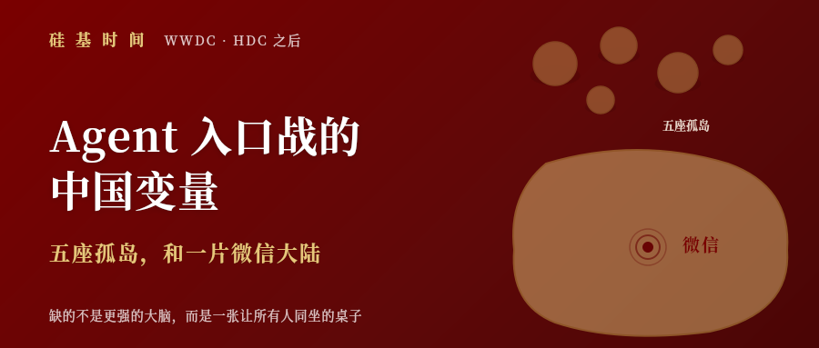
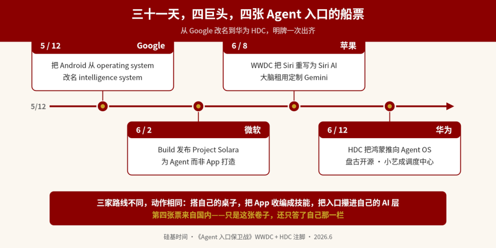
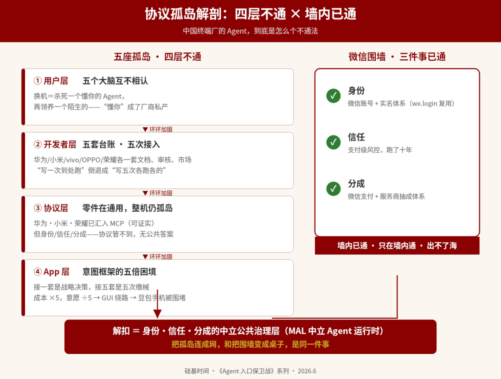
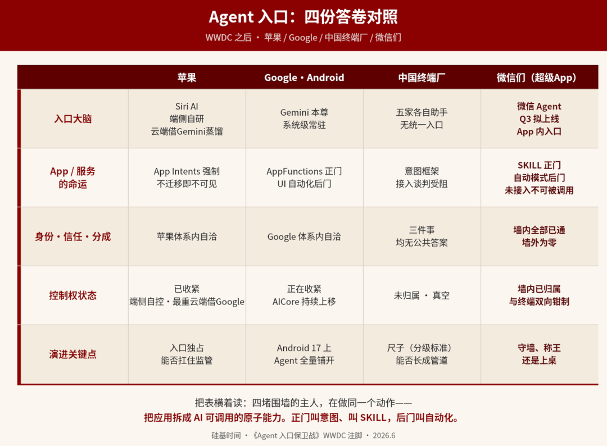

🌐 Agent 入口战的中国变量：五座孤岛，和一片微信大陆
The China Variable in the Agent Gateway War Five Isolated Islands and One WeChat Continent
当 App 从「用户打开的入口」变成「AI 调用的工具」，中国卡住的不是模型，而是谁来制定公共规则rulemaking[ˈruːlmeɪkɪŋ] n. 规则制定；公共规则
本篇摘要abstract[ˈæbstrækt] n. 摘要；概要：Agent 时代，App 能不能活下去，正在从「用户会不会打开你」，变成「AI 会不会调用你」。苹果和 Google 已经动手，把 App 从前台入口portal[ˈpɔːrtl] n. 入口；门户降成后台被调用的能力；中国五家终端厂也在各修各的 Agent，却卡在身份、信任、分成三件事agenda[əˈdʒendə] n. 议程；待办事项上——谁也不认谁，没有公共答案。而真正的中国变量variable[ˈveriəbl] n. 变量；可变因素是微信：它早已握住账号、支付、关系链、小程序和高频入口。中国 Agent 战争最大的悬念suspense[səˈspens] n. 悬念；悬疑，不是下一个模型，而是五座终端孤岛能不能和这片微信大陆，坐到同一张桌上。

6 月 3 日晚，我发出《Agent 入口保卫战defense[dɪˈfens] n. 保卫；防御》。文章写在 WWDC 之前，提出了一个判断judge[dʒʌdʒ] v. 判断；评判：Apple，微软，华为先后交卷之后，Agent 入口的争夺会从暗线变成明牌。
5 月 12 日，Google 把 Android 的定位positioning[pəˈzɪʃənɪŋ] n. 定位；位置从 operating system 改成 intelligence system；
6 月 2 日，微软在 Build 上发布 Project Solara——一个「为 Agent 而非 App 打造」的设备平台device[dɪˈvaɪs] n. 设备；装置，基于 AOSP 定制；
6 月 8 日，Apple 在 WWDC 上把 Siri 推倒重写rewrite[ˌriːˈraɪt] v. 重写；改写为 Siri AI，底层租用 Google 定制的 Gemini；
6 月 12 日，华为在 HDC 上把鸿蒙推向 Agent OS——开源盘古 openPangu 2.0、预告麒麟端侧 30B，小艺升级为系统级 Agent、成为整个操作系统的调度中心center[ˈsentər] n. 中心。

这篇文章讲三件事：先对照 WWDC 的实际发布，说清我说中了什么、错估misjudge[ˌmɪsˈdʒʌdʒ] v. 误判；错估了什么；再回答留言区comment[ˈkɑːment] n. 评论；留言问得最多的两个问题——苹果、Android、中国厂商三个生态各自往哪走？中国厂商的框架「互不相通」，到底怎么个不通blocked[blɑːkt] adj. 阻塞的；不通的法？最后补上那头房间里的大象elephant[ˈelɪfənt] n. 大象；显而易见却避而不谈的事：微信。
────────────────────
Siri 被推倒重写为 Siri AI。能多轮对话、读屏、检索你的邮件短信照片，有独立 App，对话记录跨设备同步——2011 年发布以来，Siri 第一次长成一个完整的智能体入口gateway[ˈɡeɪtweɪ] n. 网关；入口，而不是一个语音遥控器。
App Intents 成为接入connect[kəˈnekt] v. 连接；接入 Siri 的唯一通道。它的机制是：App 把自己的功能和数据声明成系统可调用的「意图」——一个意图就是一个带标准化参数和返回结构struct[strʌkt] n. 结构；返回结构的动作，订一张桌、查一笔订单、改一个设置。Siri 不再打开你的界面，而是在后台直接调用这些意图，把结果呈现在自己的对话里，还能把几个 App 的意图串成一条任务链pipeline[ˈpaɪplaɪn] n. 管道；流水线。旧的 SiriKit 同场拿到正式废弃通知deprecate[ˈdeprəkeɪt] v. 弃用；不推荐——不迁移的 App，今秋 iOS 27 发布起就不会出现在新 Siri 的世界里。
两块市场被排除在外exclude[ɪkˈskluːd] v. 排除；除外。Siri AI 今秋随 iOS 27 上线，硬件门槛hardware[ˈhɑːrdwer] n. 硬件 iPhone 17 Pro / iPhone Air 起；欧盟的 iPhone 和 iPad 用不上——苹果把原因归于《数字市场法》（DMA）的互操作性interop[ˈɪntərɑːp] n. 互操作性要求，称无法在合规前提下保证安全；中国大陆则是整个 Apple Intelligence 都不可用，监管审批approval[əˈpruːvl] n. 审批；批准中。两大监管区zone[zoʊn] n. 区域；监管区各自把这个海外入口挡在门外，原因不同，结果一样。
────────────────────
这届 WWDC 真正的重磅，不是 Siri 变聪明了，而是苹果用一纸开发者通知notice[ˈnoʊtɪs] n. 通知；公告，开始改写 App 靠什么活下去的规则。
App Intents 强制迁移mandate[ˈmændeɪt] v. 强制；要求、SiriKit 废弃，翻译过来就一句话：要么把你的功能拆成 Siri 可调用的意图，要么从入口消失。曝光的分配权从应用商店的榜单，移到了助手的调度逻辑scheduler[ˈskedʒuːlər] n. 调度器；调度程序里，一个更深、更不透明的位置。一个用户面对的前台界面，就此被降格成 Agent 在后台调用的能力供应商supplier[səˈplaɪər] n. 供应商。这是 Agent 时代对所有 App 的判决书，苹果第一个把它写成了执行细则clause[klɔːz] n. 条款；细则。
App 的生死线threshold[ˈθreʃhoʊld] n. 阈值；生死线，从「用户会不会点开你」，变成「Siri 会不会调用你」。
我在上一篇《Agent 入口保卫战》里预测——「App 会从信息入口退化为degrade[dɪˈɡreɪd] v. 退化；降级行动入口的能力供应商」，苹果用产品兑现了它。但同一篇里我还有两条对苹果的预判forecast[ˈfɔːrkæst] n. 预测；预判，一条几乎逐字命中，一条错了一半，值得拿出来对个账，因为错的那一半恰恰让核心论点更硬。
第一条命中的是底层underlying[ˌʌndərˈlaɪɪŋ] adj. 底层的；根本的模型：「Apple 选择租用底层模型——定制大参数 Gemini，跑在自家 Private Cloud Compute 上。」几乎逐字兑现，连「定制、大参数、自家基础设施infrastructure[ˈɪnfrəstrʌktʃər] n. 基础设施」三个限定词都对上了。
错估的是另一条：「iOS 27 将引入一套机制，允许 Claude、Gemini、ChatGPT 等第三方模型成为系统级助手可切换的后端」，并由此推断 Apple 间接背书了「模型中立」neutrality[nuːˈtræləti] n. 中立；中立性。
这条错了一半。多模型确实来了——但来的位置不是 Siri，是开发者工具developer[dɪˈveləpər] n. 开发者层。Foundation Models 框架现在可以把任务路由给端侧模型、Private Cloud Compute 或第三方thirdparty[θɜːrd ˈpɑːrti] n. 第三方服务端模型；Xcode 27 直接内置了 Anthropic、Google、OpenAI 三家的编码coding[ˈkoʊdɪŋ] n. 编码；编程 Agent。
而 Siri 这个入口本身，是苹果一家说了算decisive[dɪˈsaɪsɪv] adj. 决定性的；说了算的。它背后那套三层调度——什么走端侧ondevice[ɑːn dɪˈvaɪs] adj. 端侧的；设备端的、什么进 Private Cloud Compute、什么交给云端的大模型——全由苹果自己编排，用户看到的只是一个统一的 Siri。云端那层虽然借了 Gemini 的力，但对用户而言，入口的掌控权dominion[dəˈmɪniən] n. 掌控权；支配、调度逻辑、默认大脑，都攥在苹果手里（用户仍可手动选 ChatGPT 处理特定问题，但默认后端是苹果定的）。
所以苹果的真实路线，要从主文写的「封闭中立」修正revise[rɪˈvaɪz] v. 修正；修订为：
工具tool[tuːl] n. 工具层开放，入口层独占。
它把「模型中立」只给了写代码的人，没有给用户user[ˈjuːzər] n. 用户和入口。这个修正反而让主文的核心core[kɔːr] n. 核心论点更硬：三条路里，「模型中立的入口」这个位置，Google 不做，苹果也不做。
前文写中国厂商的处境plight[plaɪt] n. 处境；困境，用了一句话：身体在中国，大脑在别处。
WWDC 之后，这句话有了一个意外的新主语subject[ˈsʌbdʒɪkt] n. 主语；主体：苹果——身体在库比蒂诺，最重的那层大脑却要向山景城借。全球市值最高的硬件公司、最有钱做垂直整合的公司，在前沿模型frontier[frʌnˈtɪr] n. 前沿；边界这一层选择了租。
值得玩味的是，这不是苹果和 Google 之间第一笔大交易deal[diːl] n. 交易；协议，但方向反了。过去十几年，是 Google 每年付给苹果约 200 亿美元，买 Safari 上的默认搜索位——那笔钱差不多是 Google 从苹果设备搜索广告advert[ədˈvɜːrt] n. 广告里分出的三成。那时苹果是房东landlord[ˈlændlɔːrd] n. 房东；业主：它手握十几亿台设备的用户入口，Google 为了租这个入口付天价。如今这笔模型交易，钱反过来流了：苹果每年付 Google 约 10 亿美元，买自己造不出的前沿模型能力。同样两家公司，十几年间从"Google 交租买苹果的入口"变成"苹果交租买 Google 的大脑"——苹果从房东变成了租客tenant[ˈtenənt] n. 租客；承租人。变的不是谁强谁弱，是稀缺scarce[skers] adj. 稀缺的；不足的的东西换了：过去最稀缺的是用户入口，苹果攥着；现在最稀缺的是前沿模型，少数几家minority[maɪˈnɔːrəti] n. 少数；少数派攥着。谁攥着别人离不开的那样东西，谁就收租rent[rent] v. 收租；出租。
另一个软件生态巨头的答卷更耐人寻味notable[ˈnoʊtəbl] adj. 值得注意的；显著的。微软手握 Windows，却把 Solara 建在 MDEP 上——一套它从 AOSP 分叉fork[fɔːrk] n. 分叉；分支出来的企业版系统，因为不是授权版 Android，微软甚至不能叫它 Android。理由很坦白：低功耗设备要的芯片、驱动、硬件生态ecology[iˈkɑːlədʒi] n. 生态；生态学现成长在 Android 上，Windows 太重；何况「从零做一个移动 OS」的学费，微软用 Windows Phone 的墓碑tombstone[ˈtuːmstoʊn] n. 墓碑；教训交过一次了。
一家拥有全球最大桌面 OS 的公司，宁可在对手的开放底座openbase[ˈoʊpən beɪs] n. 开放底座；公共底座上盖楼，也不肯再赌一次从零做系统。这件事说明illustrate[ˈɪləstreɪt] v. 说明；阐明两点。一是安卓这套开源底座base[beɪs] n. 底座；基础的引力太强——连微软都得用。二是微软虽然甩开了 Google 的应用服务（GMS），却甩不开 Google 对安卓往哪走的决定权——地基groundwork[ˈɡraʊndwɜːrk] n. 地基；基础还是 Google 说了算。这第二点，正是中国需要一个中立底座的理由：底座的方向，不能攥在任何一家外国公司foreign[ˈfɔːrən] adj. 外国的；对外的手里。
三家海外巨头都在圈自己的地，却都在对手的地基上盖楼construct[kənˈstrʌkt] v. 建设；建造：苹果最重的云端推理借 Google 的力，微软的底座用 Google 的开源安卓。这不是它们不想自己干，是前沿模型和移动底座mobile[ˈmoʊbl] adj. 移动的；可移动的这两样东西，今天就攥在少数几家手里，强如苹果、微软也绕不开——只能租。
这一层，没有任何后来者latecomer[ˈleɪtkʌmər] n. 后来者；后进者能靠单家自建追平，可行的路只剩共建。
────────────────────
如果说 Gemini 在 iOS 里是个隐姓埋名anonymous[əˈnɑːnɪməs] adj. 匿名的；隐名的的外包大脑，在 Android 上它是名正言顺登基的新国王。
入口层，Gemini 取代了 Google Assistant，成为系统级systemic[sɪˈstemɪk] adj. 系统级的；全局的常驻助手。今年 I/O 上 Google 给它的定位很直白：从「你问我答」的助手，变成主动跟进proactive[proʊˈæktɪv] adj. 主动的；前瞻的任务的个人 Agent。Pichai 给的数字是：Google 每月处理的 token 量已达 3200 万亿trillion[ˈtrɪljən] n. 万亿；兆——一年前是 480 万亿，涨了 6 倍多。
App 层，Google 给 Agent 修了两条路pathway[ˈpæθweɪ] n. 路径；通道。第一条是正门：AppFunctions——让 App 把功能注册register[ˈredʒɪstər] v. 注册；登记成系统级可调用的函数，Google 自己把它类比为「设备本地的 MCP」。第二条是后门：UI 自动化——App 不接入也没关系，Gemini 直接代替用户点屏幕，用户通过「实时画面」realtime[riːl taɪm] adj. 实时的监看、随时接管。
两条路合起来，是比苹果更完整的收编方案：接入 AppFunctions 的 App 被 API 调度，不接入的被 UI 自动化automation[ˌɔːtəˈmeɪʃn] n. 自动化穿透。对中长尾longtail[lɔːŋ teɪl] n. 长尾；长尾效应开发者，「不配合」几乎不再是一个选项；对头部 App，则是换了一张牌桌的平台博弈rivalry[ˈraɪvəlri] n. 竞争；对抗。目前 AppFunctions 还在实验预览preview[ˈpriːvjuː] n. 预览；预展，与 Gemini 的集成在小范围私测，Android 17 上会扩大到更多用户、开发者和厂商——倒计时已经按下。
控制面controlplane[kənˈtroʊl pleɪn] n. 控制面；控制层层，是主文讲过的老故事：AICore 锁在 OEM 无权触及的安全等级里。于是 Android 生态的演进呈现一个剪刀差divergence[daɪˈvɜːrdʒəns] n. 分歧；剪刀差——
对开发者越来越开放open[ˈoʊpən] adj. 开放的；公开的，对手机厂商越来越封闭。胡萝卜carrot[ˈkærət] n. 胡萝卜；激励给写代码的人，大棒留给造手机的人。
────────────────────
中国市场和上面两个生态有一个根本差异fundamental[ˌfʌndəˈmentl] adj. 根本的；基本的：入口权还没有归属。
第一节末尾那两块被排除在外的市场，正是这一节的起点startpoint[stɑːrt pɔɪnt] n. 起点。Gemini 进不来，Siri AI 卡在审批，两个海外大脑都缺席，这块全球最大的单一手机市场，Agent 入口此刻是真空vacuum[ˈvækjuːm] n. 真空；空白；欧盟european[ˌjʊrəˈpiːən] adj. 欧洲的；欧盟的那一边，苹果的新入口同样被挡在门外。全球前两大major[ˈmeɪdʒər] adj. 主要的；重大的监管区，一个进不去、一个进不全。主文讲的「数字主权市场」不是推演，是正在发生的现实：监管强度intensity[ɪnˈtensəti] n. 强度越高的市场，越需要一个不被单一外国厂商控制的中立底座。
真空里站着五家厂商，各举各的旗faction[ˈfækʃn] n. 派系；各举各的旗：华为的 HMAF 鸿蒙智能体框架、小米的超级小爱加自研 MiMo 模型加玄戒芯片、vivo 的蓝心智能、OPPO 的小布助手、荣耀的阿尔法战略——主文第六部分把这个格局叫「协议孤岛」：每家都在自己的城里修 Agent，城与城之间没有路。
五家里答得最完整complete[kəmˈpliːt] adj. 完整的；完全的的是华为。6 月 12 日的 HDC，鸿蒙交出的是一份「全栈自有」fullstack[fʊl stæk] n. 全栈；全端的答卷：底座是 13 亿设备的鸿蒙、98% 的 HarmonyOS 6 升级率；模型是当天宣布从 6 月 30 日起陆续开源的盘古 openPangu 2.0（505B 与 92B 两个稀疏版本，激活参数parameter[pəˈræmɪtər] n. 参数压到 18B 和 6B），外加预告秋季上麒麟的端侧 30B；入口是升级成系统级 Agent 的小艺——鸿蒙智能体框架framework[ˈfreɪmwɜːrk] n. 框架；架构 2.0，复杂任务成功率超九成，能调用 2100 多项系统能力、独占 200 多项系统级用户数据，日活 1.8 亿、日均唤醒 30 亿次。华为还把交互范式paradigm[ˈpærədaɪm] n. 范式；典范从「人找应用」改写成「意图即服务」：一句「我下周跑半马，帮我排恢复训练加进日程」，小艺自己拆解、调用、落到日历——小艺被明确定位成「整个操作系统的调度中心」。
这份答卷的完整度completeness[kəmˈpliːtnəs] n. 完整度；完整性，反而把孤岛问题摆得更清楚。底座、模型、入口、调度全栈自有，意味着这一切的闭环边界border[ˈbɔːrdər] n. 边界；闭环边界，就是华为这一家的边界：小艺独占的那 200 多项数据、那 2100 项系统能力，换台小米手机一项都带不走。
华为答得越全栈，墙就砌得越高——它证明的不是孤岛isolated[ˈaɪsəleɪtɪd] adj. 孤立的；隔离的在变通，是每座孤岛都在把自己挖得更深。底座越自有，跨厂商的那道缝就越宽。
留言区追问最多的就是这里：到底怎么个不通法？不是都支持support[səˈpɔːrt] v. 支持 MCP 了吗？
这个问题问到点子上——因为「不通」恰恰不是一堵墙wall[wɔːl] n. 墙；屏障，是四堵。而最关键的那一堵，和协议protocol[ˈproʊtəkɔːl] n. 协议；议定书无关。
────────────────────

第一层，用户的不通：五个大脑互不相认unfamiliar[ˌʌnfəˈmɪliər] adj. 不熟悉的；不相认的。你在华为手机上调教了一年的小艺——它记住了你的日程习惯routine[ruːˈtiːn] n. 日常；惯例、常用服务、说话方式——换一台小米，全部归零，从头教超级小爱。这道墙在 Agent 时代只会更高：小艺生长在系统底层、独占大量系统级用户数据data[ˈdeɪtə] n. 数据，这份「懂你」被焊死在品牌里，换机等于清零重来。App 时代没有这个问题issue[ˈɪʃuː] n. 问题；议题——微信装在哪台手机上都是你的微信。Agent 时代，「懂你」成了厂商的私产asset[ˈæset] n. 资产；财产。
第二层，开发者的不通：协议通了，整机handset[ˈhændset] n. 手机；整机还是孤岛。想让你的服务被中国用户的手机 Agent 调用invoke[ɪnˈvoʊk] v. 调用；唤起？华为要你上小艺智能体开放平台platform[ˈplætfɔːrm] n. 平台、用鸿蒙智能体框架开发、过审后上架鸿蒙智能体市场；小米要你上 Agent 生态平台ecoplatform[ˈiːkoʊ plætfɔːrm] n. 生态平台、把服务上传给 miclaw（这个平台 2026 年 4 月才开公测，定向邀请制）；vivo 走蓝心的意图框架加智能体agent[ˈeɪdʒənt] n. 智能体；代理平台；OPPO 和荣耀的小布、YOYO 再各走一遍repeat[rɪˈpiːt] v. 重复；重做。五套文档、五套审核audit[ˈɔːdɪt] n. 审计；审核、五个市场、五份持续维护——对比海外接入苹果一套 App Intents、接入 Google 一套 AppFunctions，这是 Android 时代「写一次、到处跑」倒退成「写五次、各跑各的」。
第三层，协议的悖论paradox[ˈpærədɑːks] n. 悖论；矛盾：通了，却还是不通。协议层明明已经在收敛：华为 HMAF 兼容 MCP，小米的平台直接收 MCP 服务，荣耀官宣支持 MCP 与 A2A——头部tierone[tɪr wʌn] n. 头部；第一梯队厂商正汇向同一套全球零件标准。零件component[kəmˈpoʊnənt] n. 组件；零件通用了，整机为什么还是孤岛？
因为 MCP 解决的是「Agent 怎么调用一个工具」，它不解决工具背后那三件事——
这三件事，每一件都在协议之外beyond[bɪˈjɑːnd] prep. 超出；在……之外，每一件都没有公共答案。它们有个共同点：都不是技术问题，是「谁说了算」的问题——这类事天然不能由竞争中的某一家单方面拍板，只能由一个各方都认的公共层commonlayer[ˈkɑːmən leɪər] n. 公共层来裁定。
不通的不是协议，是协议管不到ungoverned[ʌnˈɡʌvərnd] adj. 不受管束的；协议管不到的的事：身份、信任、分成。
USB-C 接口全球统一了，也不意味着任何设备能插进任何机房——零件标准化standardize[ˈstændərdaɪz] v. 标准化；规范，和系统级互通，是两回事。
第四层layer[ˈleɪər] n. 层；层次，Agent 的不通：谁也不肯把大脑交出去。让 Agent 真正跨应用干活，正路是意图intent[ɪnˈtent] n. 意图；意向框架——App 把功能注册成可调用的意图。华为、vivo、OPPO 都推出了各自的意图框架，小红书、同程、58 同城、支付宝出现在各家的合作名单roster[ˈrɑːstər] n. 名单；花名册里。但据接触过谈判的业内人士insider[ɪnˈsaɪdər] n. 内部人士透露，接入进展并不顺利——App 大厂普遍谨慎：被 Agent 直接调用，用户就不再打开 App，流量、广告、数据积累都被截走。
这层抵触resistance[rɪˈzɪstəns] n. 抵抗；抵触，在 Agent 时代比 App 时代重得多。App 时代，应用商店appstore[æp stɔːr] n. 应用商店要的是上架和分成，数据还攥在 App 自己手里；Agent 时代，系统级 Agent 长在 OS 底层、贴着用户数据，一个 App 把功能注册给它，等于把「用户想干什么」这条最值钱的信息流feed[fiːd] n. 信息流；推送，连同交易和数据，一起接到了终端厂的管子上。交给一个框架是让渡cede[siːd] v. 让渡；放弃，交给五个各自封闭的框架、还得赌哪家终端厂将来不会变成自己的对手——接入意愿上不来，根子在这里。
于是出现绕路方案workaround[ˈwɜːrkəraʊnd] n. 绕路方案；变通方法：GUI Agent——模型直接看屏幕、模拟点击，不需要 App 配合。豆包手机走的就是这条路，结果是被围堵contain[kənˈteɪn] v. 遏制；围堵。耐人寻味的是 OPPO 的内部判断：他们把 GUI Agent 定位成「覆盖长尾场景的兜底方案」，更倾向用 Agent to Agent 的方式实现生态互联，理由是一句很诚实的话——「手机在这方面的尝试其实牵一发而动全身domino[ˈdɑːmɪnoʊ] n. 多米诺效应；连锁，因为它本身的生态位很特殊。」
翻译一下：终端厂自己也知道，硬闯 App 的围墙会引发全面战争allout[ɔːl aʊt] adj. 全面的；全力，坐下来谈又没有共同的桌子。四层不通，环环加固reinforce[ˌriːɪnˈfɔːrs] v. 加固；加强。
而四层之下，还压着一个谁都没先开口initiate[ɪˈnɪʃieɪt] v. 发起；开始的问题：钱怎么分。App 时代的分账规则splitting[ˈsplɪtɪŋ] n. 分割；分成用了十五年才稳定——苹果三七开，中国安卓渠道对游戏一度按五五分。Agent 时代这套规则直接失效：过去 App 付给应用商店 30%，买的是分发handout[ˈhændaʊt] n. 分发和曝光；现在发现、比价、下单全由系统 Agent 在后台完成，App 连界面都没露脸，议价地位bargain[ˈbɑːrɡən] v. 议价；讨价还价归零。系统会不会要一个比 30% 更狠的「任务佣金」commission[kəˈmɪʃn] n. 佣金；提成？搜索时代的竞价排名auction[ˈɔːkʃn] n. 拍卖；竞价会不会重演成「调用竞价」——谁出价高，谁被 Agent 优先选中？更反常识counterintuitive[ˌkaʊntərɪnˈtuːɪtɪv] adj. 反直觉的的是：用户一句「订一张最便宜的半马酒店」，背后可能调用五个 App、烧掉一大把推理 token，开放接口的 App 非但拿不到广告费，还得为别人的调用倒贴算力钱——账单最后记在自己头上。这笔账算不平，意图框架就只是空中楼阁illusion[ɪˈluːʒn] n. 幻象；空中楼阁。而它算不平的根子rootcause[ruːt kɔːz] n. 根因；根源，和前三件事一样：钱怎么分，没有一家能替所有人拍板。
把这四层叠起来看，会发现 Agent 入口战的本质，不是「谁家助手更聪明」，是一场新分发秩序order[ˈɔːrdər] n. 秩序；顺序之争——每一类玩家的核心问题都被改写了。对 App 公司，过去是「怎么让用户打开我」，未来是「怎么让 Agent 调用我」；对终端厂，过去是「怎么卖更多设备equipment[ɪˈkwɪpmənt] n. 设备」，未来是「怎么成为那个调度一切的中心」；对整个中国生态，过去是「各自怎么做强」，未来是「怎么建起一张彼此都认的公共调用网network[ˈnetwɜːrk] n. 网络」。四层不通卡住stuck[stʌk] adj. 卡住的；困住的的，正是最后这件事。
────────────────────
中国 Agent 战场的真实格局landscape[ˈlændskeɪp] n. 格局；版图，从来不只是五座孤岛——岛群旁边停着一片大陆：微信。
6 月 2 日《金融时报》报道：腾讯正在测试微信内置 AI Agent——主界面右滑唤出，一句话就能驱动它调用小程序完成筛选、下单placeorder[pleɪs ˈɔːrdər] v. 下单；订购，内部列为最高战略优先级。The Information 给的时间表timeline[ˈtaɪmlaɪn] n. 时间表；时间线是三季度上线，可连接微信内数百万个小程序。这不是临时起意impulse[ˈɪmpʌls] n. 冲动；临时想法：腾讯 3 月的年报已写明要在微信生态内建设「下一代 Agentic services」。消息传出当天，腾讯股价应声大涨surge[sɜːrdʒ] v. 猛涨；激增——市场对「微信做 Agent」的分量，投了最直接的一票。
六天之后，6 月 8 日——苹果发布 Siri AI 的同一天——微信开放平台官宣official[əˈfɪʃl] adj. 官方的；正式的向小程序开发者开放微信 AI 接入。指引开头很客气：「在充分尊重开发者权益和自主选择voluntary[ˈvɑːlənteri] adj. 自愿的；自主的的基础上」，往下是两种模式：自动模式，开发者授权平台读取小程序源码，无需额外开发，微信 AI 直接操作页面；开发模式manual[ˈmænjuəl] adj. 手动的；开发模式（内测中），开发者把功能封装成 SKILL，由「小程序 MCP」协议供 AI 调用。但公告同时写明两件事：接入后小程序「有机会」被推荐recommend[ˌrekəˈmend] v. 推荐；建议和调用；未接入的，将无法被微信 AI 调用。美团已宣布announce[əˈnaʊns] v. 宣布；发布接入。
把这份开发文档和前文对照着读，有三个发现。
第一，微信对小程序做的，正是苹果对 App 做的。同一道最后通牒ultimatum[ˌʌltɪˈmeɪtəm] n. 最后通牒，两种口音：苹果用废弃通知说「不迁移 App Intents，就从新 Siri 消失」；微信用「充分尊重开发者权益和自主选择option[ˈɑːpʃn] n. 选择；选项」开头，落点是「未接入将无法被调用」。一个把话挑明clarify[ˈklærəfaɪ] v. 阐明；挑明，一个裹着敬语，逼到的是同一个墙角——应用退化为可调用的能力，界面退化为对话流里的一张卡片。而且接入只是门票ticket[ˈtɪkɪt] n. 门票；入场券：调用要过平台评测与审核，推荐与否是平台裁量。「Siri 会不会调用你」的微信版已经挂出来了——微信 AI 会不会调用你。
第二，微信把 Google 的两条路在墙内复刻replicate[ˈreplɪkeɪt] v. 复制；复刻了。开发模式是正门（标准化接口），自动模式automode[ˈɔːtoʊ moʊd] n. 自动模式是后门（平台读源码、AI 直接操作页面）——而且这条后门比 Google 的 UI 自动化伸得更深：Google 只是看屏幕，微信直接读代码。正门加后门，开发者同样面对收编：中长尾几乎没有「不配合」resist[rɪˈzɪst] v. 抵抗；抗拒的余地，头部则只剩「被怎样调用」的谈判空间。
第三，开发文档明文explicitly[ɪkˈsplɪsɪtli] adv. 明确地；明文写着，小程序 MCP「与标准 MCP 不同」。MCP 和 Skill 本是 Anthropic 立下、全球 Agent 生态正在收敛的两个标准，可微信把它们接进来后改写redefine[ˌriːdɪˈfaɪn] v. 重新定义；改写了语法：标准 MCP 让任意 AI 连接任意工具，小程序 MCP 只让微信 AI 连接微信生态内的工具。这不是微信第一次这么干——小程序从诞生起就走私有private[ˈpraɪvət] adj. 私有的；私人的的一套：页面不用 HTML 用 WXML，样式不用 CSS 用 WXSS，没有标准 DOM，连尺寸单位都自创了一个，官方理由通常是性能与安全。
全球标准进了墙，不只变成方言dialect[ˈdaɪəlekt] n. 方言；地方话——墙还会反过来定义这门语言。
把微信 Agent 放进上一节的「四层不通」框架里看，会看到一个让所有终端厂坐立不安uneasy[ʌnˈiːzi] adj. 不安的；担忧的的事实——
第六节列的那三件没有公共答案的事——身份identity[aɪˈdentəti] n. 身份；标识、信任、分成——微信的围墙之内，全部已经解决了。身份是微信账号加实名体系realname[riːl neɪm] n. 实名——开发文档明文规定，AI 模式下的用户登录身份与原小程序保持一致，wx.login 直接复用；信任是支付级payment[ˈpeɪmənt] n. 支付风控跑了十年；分成revenue[ˈrevənjuː] n. 收入；分成是微信支付加服务商抽成体系。再加上数百万小程序加搜一搜这个现成readymade[ˈredi meɪd] adj. 现成的；预制好的的分发盘子，14.32 亿月活之上，Agent 需要的全部基础设施现成摆着。
严格说，「墙内enclosed[ɪnˈkloʊzd] adj. 封闭的；围墙内的已通」的不止微信一家——支付宝同样三件俱全，阿里的千问已经在打通电商、出行与蚂蚁支付干活。但支付宝缺两样东西：社交关系链，和「一天被打开几十次」的入口频次。三件事加这两样，凑齐assemble[əˈsembl] v. 集合；凑齐的只有微信。
五家终端厂还在为这三个问题各修各的答案，微信墙内的答案，十年前就在真金白银地运转了。
这就是为什么豆包们做 Agent 要「找入口」，而微信做 Agent 只需要「开闸」unleash[ʌnˈliːʃ] v. 释放；放开。也是为什么字节的豆包顶着 3.45 亿月活，仍然要去造一台手机——独立 AI App 有心智mindshare[ˈmaɪndʃer] n. 心智份额；认知没闭环，缺的就是微信墙内那三件事。
而微信还有一件别人没有的底牌：商业闭环closedloop[kloʊzd luːp] n. 闭环；完整链路。抖音的电商闭环也跑通了，靠的是公域内容流加直播间的货架逻辑shelf[ʃelf] n. 货架；货架逻辑；微信走的是另一条——商家这几年正从拼价格、拼量的货架电商出走，涌进微信做私域，把客户沉淀loyalty[ˈlɔɪəlti] n. 忠诚度；客户沉淀在自己手里。私域里的发现、比价、下单本来就长在小程序和支付里，Agent 把它们串成一句话的事，交易里抽一道手续费fee[fiː] n. 费用；手续费，token 的账单就有人付了。这一点很关键：别家做 Agent 都在发愁推理成本cost[kɔːst] n. 成本谁来出，微信靠交易抽成就能覆盖——用户每下一单，抽的手续费就够付这次调用烧掉的算力。而这套抽成管道早就是成熟的现金流：微信支付的商业支付commerce[ˈkɑːmɜːrs] n. 商业；商务，是腾讯金融科技板块的基本盘，而这个板块 2025 年收入 2294 亿元、占腾讯总营收三成，是它仅次于游戏的第二大收入来源。做 Agent 不用新建一条变现路monetization[ˌmɑːnɪtaɪˈzeɪʃn] n. 变现；商业化，现成的支付管道直接接上就行。三件事之外，它还多解决了一件最现实的：不光能把钱分清楚，还能挣钱养住这套系统。
────────────────────
但墙内大陆有两个结构性局限structural[ˈstrʌktʃərəl] adj. 结构性的。
第一，它只在墙内通。微信 Agent 调度的是小程序宇宙；墙外的系统能力、硬件、其他 App 的原生功能，它够不着——除非手机厂商放行，而手机厂商攥着语音入口、系统权限和默认设置default[dɪˈfɔːlt] n. 默认；缺省。豆包手机演示demonstrate[ˈdemənstreɪt] v. 演示；示范了平台封杀终端；接下来大概率上演反向剧目：终端钳制平台——系统级 Agent 和微信 Agent 抢同一个用户的同一句指令，谁先听见、谁能调谁，取决于谁攥着系统。
中国的 Agent 战争由此从「终端对平台」升级为双向钳制checkmate[ˈtʃekmeɪt] n. 钳制；将死：你封我的手机，我掐你的入口。
第二，它出不了海。墙内大陆continent[ˈkɑːntɪnənt] n. 大陆；大洲的全部地基——小程序密度、支付渗透、关系链——都长在中国市场里。微信 Agent 可以统一墙内体验，但它给不了中国产业一个能走向全球global[ˈɡloʊbl] adj. 全球的的 Agent 底座。
所以超级 App 面前摆着三个选项：
守墙fortress[ˈfɔːrtrəs] n. 堡垒；要塞（赌系统级 Agent 永远进不来——这堵墙挡得住一台手机，挡不住五家终端厂加一个时代）；
称王dominant[ˈdɑːmɪnənt] adj. 主导的；称王的（自建 OS 外之 OS，重演双向钳制的消耗战）；
或者上桌negotiation[nɪˌɡoʊʃiˈeɪʃn] n. 谈判；协商——把墙内那套已经跑通的三件事答案，变成行业公共层的蓝本。
6 月 8 日官宣说明微信已经迈进了「称王」，但称王和上桌并不互斥mutual[ˈmjuːtʃuəl] adj. 相互的；互斥的——墙内称王解决不了出海、也解决不了与终端的钳制，而且称王越成功，上桌定规则的筹码越足。
对微信，上桌不是让利，是变现：三件事完整、又握着关系链和最高入口频次的，全中国就微信一家，在公共规则的制定桌上它天然natural[ˈnætʃərəl] adj. 自然的；天然的坐主位。我在上一篇提出的 MAL（Mobile Agentic Linux，移动智能体公共底座publicbase[ˈpʌblɪk beɪs] n. 公共底座）——一个由终端厂、监管、模型方、Agent 方、App 方共建的中立联盟，正是为这张桌子设计的：App 这一方留的就是微信这个位置——
腾讯级别的玩家在不在桌上，桌子本身的合法性legitimate[lɪˈdʒɪtɪmət] adj. 合法的；正当的都不一样。
────────────────────

先把表横着读「App / 服务的命运」那一行：四堵围墙的主人，在 2026 年做着同一个动作——把应用拆成 AI 可调用的原子能力atomic[əˈtɑːmɪk] adj. 原子的；基础的，正门叫意图、叫 SKILL，后门叫自动化。对一个想全渠道omni[ˈɑːmni] adj. 全渠道的；全方位的存活的服务，「写一次、到处跑」的反面正在成形：App Intents 写一遍，AppFunctions 写一遍，五套终端框架各写一遍，微信 SKILL 再写一遍。
四层不通，不是哪一家的过错——它是「没有公共层」这个结构的必然产物inevitable[ɪnˈevɪtəbl] adj. 不可避免的，换任何五家公司坐进这个结构，结果都一样。而公共层并不要求谁放弃自己的助手。Linux 史给过现成答案template[ˈtemplɪt] n. 模板；现成方案：共内核、异发行——Red Hat、SUSE、Ubuntu 用同一个内核打了三十年商战，差异化全在发行层。小艺、超级小爱、蓝心小 V、小布、YOYO，就是 Agent 时代的五个发行版；底座统一抹平的不是差异，是五份重复造轮子duplicate[ˈduːplɪkeɪt] v. 重复；复制的成本。这条思路，下一篇《MAL 2.0》会展开。
再读最后两列，就是中国战场的特殊性peculiarity[pɪˌkjuːliˈærəti] n. 特殊性；独特性：
**海外是巨头对巨头的阵地战，中国是终端、平台、独立 AI 入口的三方混战melee[ˈmeɪleɪ] n. 混战；乱战**——苹果和 Google 面对的开发者里，没有一个握着 14 亿月活。
把表竖着读控制权control[kənˈtroʊl] n. 控制权那一行：苹果已收紧，Google 正在收紧，中国未归属。前两个没有悬念，第三个才有变数uncertainty[ʌnˈsɜːrtnti] n. 不确定性——而变数的窗口在走表。主文给的 36 个月，由四个外部进程的倒计时决定，其中「Apple 的 Agent 体系全量铺开rollout[ˈroʊlaʊt] n. 铺开；推广」这一格，已随 iOS 27 今秋全量、Siri AI 年内开测正式启动；Android 17 的 Agent 全量铺开是另一格。微信 Agent 三季度上线，则会在窗口之内把「双向钳制」从推演scenario[sɪˈnærioʊ] n. 场景；推演变成日常。
让这五家同意一个系统核心，近乎almost[ˈɔːlmoʊst] adv. 几乎；近乎不可能。证据就在眼前——跨品牌传一个文件这种最简单的协作，非华为几家也是从 2019 年的互传联盟alliance[əˈlaɪəns] n. 联盟起步，磨了好几年才磨通；每家手里都备着自己的 OS，鸿蒙之外，小米有澎湃 OS，vivo 有自研的蓝河，连海内外domestic[dəˈmestɪk] adj. 国内的；海内外的两轨的系统都刚并成自家一套；agents all in 的账单bill[bɪl] n. 账单；账目，各家自己都还没算清；说到底，他们的本能仍是堆料spec[spek] n. 规格；配置卖硬件的公司。我和几位一线决策者executive[ɪɡˈzekjətɪv] n. 高管；决策者聊过，对「统一 Agent OS」普遍悲观，有位资深专家举了个很关键、却很小的例子：连 WebView 这种最底层的东西，几家到今天都统一不了——明明都是魔改同一个 Chromium 内核，可每家都要在上面叠自己的一套管控，连一个浏览器内核都各自要加一道自己的管控，遑论一个调度全机的 Agent 核心。
但这些悲观pessimistic[ˌpesɪˈmɪstɪk] adj. 悲观的，针对的全是「统一一个系统核心」——而 MAL 要的恰恰不是这个。WebView 统一不了，是因为它动了各家系统的实现implementation[ˌɪmplɪmenˈteɪʃn] n. 实现；实施；互传联盟最终通了，是因为它不动任何一家的系统，只在上面立一层薄薄的协议。MAL 的入口走的是后一条路：不换核心、不碰各家的发行版，只在三件事的治理层governance[ˈɡʌvərnəns] n. 治理；管理上立一层公共标准。「我的地盘我做主」和「地盘之间留一条公共通道corridor[ˈkɔːrɪdɔːr] n. 走廊；通道」并不矛盾。
何况还有两个五年前没有的新情况：当年 Google 还没把控制权收进 AICore，微信也还没带着现成的闭环要在三季度入场entry[ˈentri] n. 进入；入场。外部压力变了，"自己单干划算还是一起共建cobuild[koʊ bɪld] v. 共建；协同建设划算"这笔账，也得重新算。
该从哪里下手，第六节已经标出来了。技术协议这层正在统一：华为、小米、荣耀都已经接入 MCP。标准这层也有了开头：《人工智能终端智能化分级》国家标准已经把五家拉到一起当起草单位drafter[ˈdræftər] n. 起草方。真正还缺的，是身份、信任trust[trʌst] n. 信任；信赖、分成这三件事的公共规则。这三件事说到底是分钱分权equity[ˈekwəti] n. 公平；权益，谁自己出来定，别家都不服——所以只有一个办法：交给一个谁都不独大的中立机构来管，谁贡献大谁的话语权就大。
至于这张桌子怎么搭，起点未必在最难处：不必从「数据互通interconnect[ˌɪntərkəˈnekt] v. 互连；互通」动手，最薄的第一步是先立一层谁都不独大的 Agent 能力注册与认证——不碰系统核心、不要求交出用户数据，只解决「一个外来 Agent 凭什么被信任、被调用、被分账」。身份与信任先通，分成随后，数据互不互通disconnected[ˌdɪskəˈnektɪd] adj. 断开的；不互通的甚至可以永远不碰。这条路谁来牵头lead[liːd] v. 牵头；领导、各方为什么愿意上桌，是下一篇的事。
────────────────────
把上面的「如果」反过来推一遍：假设这张桌子始终没搭起来，五家各守各的城、微信守住墙，三年后会怎样？这不是危言，是把今天每一条已经画好的线，顺斜率往前延extrapolate[ɪkˈstræpəleɪt] v. 外推；延伸一格。
先碎的是用户体验experience[ɪkˈspɪriəns] n. 体验；经验。今天换手机，丢的是相册和聊天记录chatlog[tʃæt lɔːɡ] n. 聊天记录，云端找得回；三年后换手机，丢的是一个懂你两年的助手——它知道你每周三接孩子pickup[ˈpɪkʌp] n. 接人；接送、出差只住某个连锁、说「老地方」指哪家店。这些「理解」焊死在前一家的系统底层，带不走portable[ˈpɔːrtəbl] adj. 可移植的；可携带的。于是用户被迫精神分裂split[splɪt] v. 分裂；分离：你的微信在每台手机上都是你的微信，你的系统助手却换一台就失忆一次，「问系统的事」和「问微信的事」得分两个脑子记。
接着碎fragment[ˈfræɡmənt] v. 碎裂；碎片化的是开发者投入。「写一次、到处跑」在 Agent 层退回部落时代tribal[ˈtraɪbl] adj. 部落的；部落式的：第六节那七八套封闭接入，三年后逼出分化——大厂只接流量最大的两三家，中小开发者干脆只接微信。两头一挤，终端厂的系统 Agent 越来越空，最后沦为一个调不动外卖、打不到车、买不了票的高级闹钟alarmclock[əˈlɑːrm klɑːk] n. 闹钟。
最后碎的是「Agent OS」这个词本身。五家都说自己做的是 Agent OS、是操作系统的调度中心。但操作系统的前提是能调度一切，而这五个「OS」每个都只能调度自己围墙内的部分。当一个 OS 调不动用户每天用得最多的那批 App，它就不是 OS，是个壳shell[ʃel] n. 壳；外壳。
中国可能成为全球唯一一个「人人都在做 Agent OS、却没有一个真正的 Agent OS」的市场。
────────────────────
一个月，先是三张来自海外的船票boarding[ˈbɔːrdɪŋ] n. 登船；船票：Google 把 Android 改了名，微软把设备平台建在 AOSP 上，苹果把 Siri 的大脑租给了 Google。三家路线不同，动作action[ˈækʃn] n. 动作；行动相同——把自己的桌子搭起来，把 App 收编成 Agent 的技能，把入口攥进自己的 AI 层。第四张票来自国内：华为把鸿蒙推成 Agent OS，小艺坐上了操作系统的调度中心——中国厂商也开始交卷submit[səbˈmɪt] v. 提交；交卷了，只是这张卷子还只答了自己那一栏。
中国的答卷answer[ˈænsər] n. 答案；答卷，一半是孤岛，一半是围墙：五家终端厂的孤岛，缺的是三件事的公共答案；微信的围墙，圈住的恰恰是这三件事的现成答案。
把孤岛连成网，和把围墙变成桌子convene[kənˈviːn] v. 召集；开会，是同一件事。
苹果和 Google 争的是「谁的大脑更强」。中国要解的是另一道题：缺的从来不是一个更强的大脑，而是让五个大脑和一片大陆愿意同坐一桌的那套规则。
这场战争的完整推演、中国手里的牌、以及 MAL 的具体方案，都在 6 月 3 日那篇《Agent 入口保卫战》里。这篇是它的续集sequel[ˈsiːkwəl] n. 续集；后续——而结论没有变：
合纵coalition[ˌkoʊəˈlɪʃn] n. 联盟；联合未必赢，但连横必输。
────────────────────
下一篇是《MAL 2.0：Linux 赢 Unix，赢的从来不是内核》。今天中国 Agent 入口战遇到的难题——五家凭什么共建、同质化homogeneous[ˌhoʊməˈdʒiːniəs] adj. 同质的；同质化的怎么破、出海靠什么、token 账单谁来付——三十年前的 Linux 生态都遇到过。Linux 最重要的胜利不是写出了一个更强的内核，而是发明了一套让竞争者共同站在同一层底座上的产业结构structure[ˈstrʌktʃər] n. 结构；产业结构：上层继续厮杀，底层共同繁荣；诸侯不必交出王冠，只需要统一货币和度量衡measurement[ˈmeʒərmənt] n. 度量；测量。中国 Agent 生态要躲开「五座孤岛各自为战fragmented[ˈfræɡmentɪd] adj. 碎片化的」，缺的正是这样一层薄而关键的公共底座。怎么建，下篇拆开讲。
────────────────────
本文主要基于 Apple WWDC 2026、Google I/O 2026、华为 HDC 2026、微信开放平台公告、腾讯财报及多家产业媒体的公开报道report[rɪˈpɔːrt] n. 报道；报告整理；涉及未公开商业条款provision[prəˈvɪʒn] n. 条款；规定与未上线产品的信息，均按报道来源标注。
参考资料reference[ˈrefrəns] n. 参考；参考资料与公开信息来源（按主题归并）
——蒋涛 · CSDN